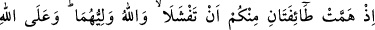
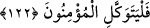

savunup düşmanları ölülerimizden ve yaralılarımızdan uzaklaştırmak için
yanındakilerle beraber düşmana hücûm edecek ve Allah’ın inâyetiyle kâfirleri
hezîmete uğratacak olanlara Allah rahmetiyle muamele etsin.” buyurdu.
Evet işte bütün bunlar Allah Teâlâ’nın: “sabreder, korunursanız onların size hiçbir
zararı dokunamaz.” (Âl-i İmrân, 3/120) âyet-i kerîmesini ve savaşa koşanlara Allah’ın
yardım edeceğini; arkasını dönüp kaçanları da rezîl edeceğini te’yîd etmektedir.
Her türlü hatâdan korunma, ancak Allah’ın inâyetiyle mümkündür.
“Allah işitici ve bilicidir.”
Allah, Hz. Peygamber’in Uhud Harbi ile ilgili olarak arkadaşlarıyla istişâre ederken
bazılarının: “Medîne’de kal”, bazılarının da “düşmanın üzerine yürü” şeklindeki
görüşlerini görmekte ve bilmekte idi. Bu toplantıdaki herkesin bir maksadı vardı. Kimi
gerçek görüşünü belirtiyor; kimi ikiyüzlülük ediyordu. Allah Teâlâ; “Dediklerini
duyuyor; içlerinde gizlediklerini biliyorum” buyurmaktadır.
122. O zaman içinizden iki bölük bozulmaya yüz tutmuştu. Halbuki Allah onların
yardımcısı idi. Mü’minler, yalnız Allah’a dayanıp güvensinler.
Ey inananlar “sizden iki grup” -bunlar, Hazrec’den Selemeoğulları, Evs’ten
Hâriseoğulları idi- zaafa düşüp korktukları için, doğru davrandıklarını zannederek geri
çekilmek sûretiyle “bozulmaya yüz tutmuştu.” Bu ifade de yukarıdaki: “Hani âilenden
erkenden ayrılmıştın” kavlinden bedeldir. Çünkü hatırlatmanın maksadı budur.
“Hemm” sözlükte zihnin çok mühim bir şeye takılmasıdır. “Feşel” (bozulma) ise, zaaf
demektir.
Bu iki grubun takıntısının kesin bir niyet ve kararlılık olmadığı açıktır. Bu takıntı,
sadece kuruntu ve düşünce kabilindendir. Nitekim, nefis şiddetli durumlar karşısında bir
nevi endişeye kapılır, sonra bu nefsin sahibi, nefsini sebât ve sabra yöneltir, kötü
duruma karşı korunmaya şartlandırır.
“Halbuki Allah, kendilerinin yardımcısıdır.”
Bu çeşit düşüncelere uymaktan Allah onları korur. “İnananlar” bütün işlerinde
müstakil ya da müşterek olarak başkasına değil, “ancak Allah’a tevekkül etsinler.”
Çünkü Allah onlara yeter.
Bu âyette, îman vasfının, tevekkülün sebep ve mûciblerinden olduğuna işaret
edilmektedir. Tevekkül de aczini itiraf edip başkasına dayanmaktır.
İmam Râzî şöyle diyor: “Bu âyet-i kerîmede, insanın kendisine ârız olan çirkin
durumları ve âfetleri, Allah’a tevekkülle uzaklaştırması; nefsindeki bu rahatsızlığı
Allah’a tevekkül ederek gidermesi gerektiğine işaret edilmektedir.”